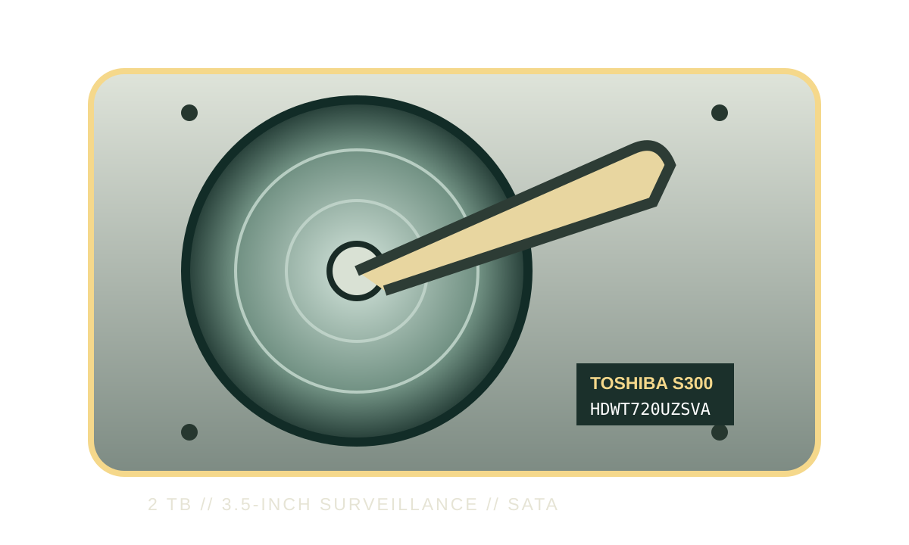

[ IDENTIFIED SURVEILLANCE HDD // MODEL-SPECIFIC RECORD ]
Toshiba S300 HDWT720UZSVA
2 TB; 3.5-inch; SATA 6.0 Gbit/s. S300 surveillance drive identified by its complete HDWT720UZSVA model number. Specifications below are tied to the manufacturer’s capacity/model table; do not treat other capacities or suffixes as interchangeable.

IDENTIFICATION: The manufacturer’s current S300 datasheet lists this exact retail model in its capacity table. Its specification describes the S300 family as an SMR surveillance drive. Verify the exact nameplate and revision before procurement, service or recovery.
Recorded specifications
| Exact manufacturer number | HDWT720UZSVA |
|---|---|
| Capacity | 2 TB (decimal, manufacturer-rated) |
| Form factor | 3.5-inch; check chassis clearance, mounting, carrier and cooling. |
| Interface | SATA 6.0 Gbit/s (manufacturer-rated); backward link negotiation depends on the host controller. |
| Rotational speed | 5,400 rpm |
| Buffer / cache | 128 MB (manufacturer-listed buffer) |
| Recording technology | SMR (shingled magnetic recording) |
| Annual workload rating | 180 TB/year; this is a rated annualized workload, not a guarantee of performance or suitability for every RAID rebuild or write pattern. |
| Surveillance workload | 24/7 surveillance DVR/NVR recording; the Toshiba specification supports up to 64 cameras and up to 8 drive bays. Its documented SMR design suits sequential video capture; avoid assuming desktop/RAID rebuild write behavior without system qualification. |
| Host compatibility | The cited S300 datasheet identifies 3.5-inch SATA 6.0 Gbit/s and 24/7 DVR/NVR use; check the specific NVR’s maximum drive capacity, sector handling and firmware before deployment. A SATA connector alone does not establish compatibility with a given DVR, NVR, HBA, expander, RAID controller or enclosure. |
Host integration and recording notes
- Use a SATA-capable DVR/NVR, HBA or backplane that supports this capacity and the manufacturer’s documented workload; confirm drive-bay count, airflow, vibration and power requirements in the exact system’s qualification list.
- All cited Toshiba specifications identify a 3.5-inch SATA device. SAS-only hosts are not automatically compatible; verify SATA-device support for the actual controller, expander and enclosure.
- Use a GPT-aware operating system and confirm the NVR/RAID stack supports this capacity, address range and sector presentation before initializing. Preserve any system-specific provisioning or firmware procedures.
- Recording method matters: SMR can behave differently under sustained random writes, rebuilds and repeated overwrites than CMR. Use the manufacturer’s stated surveillance application and do not substitute desktop benchmarks for a workload qualification.
- If the drive contains wanted data and reports errors, avoid writes, formatting, repeated power cycles and stress tests. Capture model, firmware, host and symptom details and consult a qualified recovery specialist.
Manufacturer documentation
- Toshiba S300 2025 manufacturer datasheetPrimary Toshiba technical datasheet: exact SKU/capacity table and model-family performance, recording technology, workload and interface specifications.
- Toshiba S300 manufacturer product datasheet (earlier revision)Second Toshiba manufacturer reference for product-line surveillance applications and host-use context. Check the exact model and revision against the datasheet before deployment.
Manufacturer documentation can change. The values above reflect the cited revision; verify the drive label and host qualification at installation.